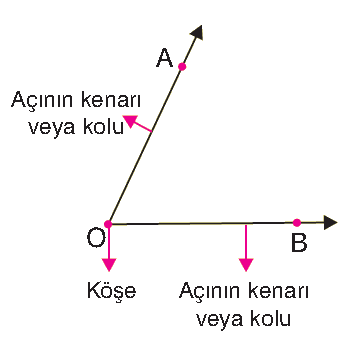
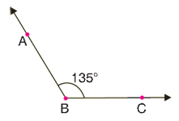
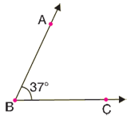
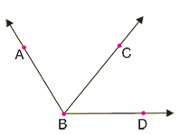
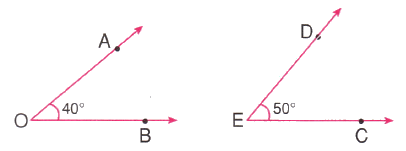
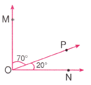
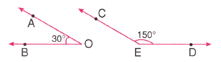
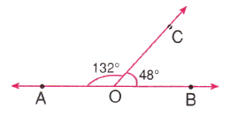
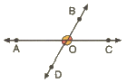

Başlangıç noktaları aynı olan iki ışın açı oluşturur. İki ışının ortak olan başlangıç noktasına açının köşesi denir. Işınlara ise açının kenarı veya açının kolu denir.

ÖRNEK:
Aşağıdaki açıyı isimlendirelim ve sembolle gösterelim.ÖRNEK:
Aşağıdaki açıyı isimlendirelim ve sembolle gösterelim.
ÖRNEK:
Aşağıdaki 37 derecelik açının ölçüsü sembolle m(ABˆC)=37° veya m(Bˆ)=37° şeklinde gösterilebilir.
ÖRNEK:
45 derecelik B ve F açısı düşünelim. m(Bˆ)=45° ve m(Fˆ)=45° olduğu için B ve F açıları eş açılardır.Köşesi ve birer kenarı ortak olan açılara komşu açılar denir.
ÖRNEK:
Aşağıdaki ABC açısı ile CBD açısının BC kenarı ortak olduğu için bu iki açı komşudur.

Ölçüleri toplamı 90° olan iki açıya tümler açı denir.
ÖRNEK:
Aşağıdaki AOB açısının ölçüsü ile DEC açısının ölçüsünün toplamı 90° olduğu için bu iki açı tümler açıdır.
s(AÔB) + s(DÊC) = 40° + 50° = 90° olduğu için AÔB ile DÊC tümlerdir.

ÖRNEK:
70° ile 20°, 89° ile 1°, 75° ile 15° tümler açılardır.
Ölçüleri toplamı 90° olan ve komşu olan iki açıya komşu tümler açı denir.
ÖRNEK:
Aşağıdaki MOP açısının ölçüsü ile PON açısının ölçüsünün toplamı 90° olduğu için ve bu açılar komşu oldukları için bu iki açı komşu tümler açıdır.
s(MÔP) + s(PÔN) = 70° + 20° = 90° olduğu için ve bu açılar komşu olduğu için MÔP ile PÔN komşu tümlerdir.

Ölçüleri toplamı 180° olan iki açıya bütünler açı denir.
ÖRNEK:
Aşağıdaki AOB açısının ölçüsü ile DEC açısının ölçüsünün toplamı 180° olduğu için bu iki açı bütünler açıdır.
s(AÔB) + s(DÊC) = 30° + 150° = 180° olduğu için AÔB ile DÊC bütünlerdir.

170° ile 10°, 99° ile 81°, 45° ile 135° bütünler açılardır.
ÖRNEK:
Ölçüleri toplamı 180° olan ve komşu olan iki açıya komşu bütünler açı denir.
ÖRNEK:
Aşağıdaki AOC açısının ölçüsü ile COB açısının ölçüsünün toplamı 180° olduğu için ve bu açılar komşu oldukları için bu iki açı komşu bütünler açıdır.
s(AÔC) + s(CÔB) = 132° + 48° = 180° olduğu için ve bu açılar komşu olduğu için AÔC ile CÔB komşu bütünlerdir.

Kesişen iki doğruda oluşan açılarda komşu olmayan açılara ters açılar denir. Ters açıların ölçüleri birbirine eşittir.
ÖRNEK:
Ters Açı Aşağıdaki şekilde BÔC ile AÔD ters açıdır ve AÔB ile DÔC ters açıdır.
Bu ters açıların ölçüleri birbirine eşittir. s(BÔC) = s(AÔD) ve s(AÔB) = s(DÔC)

1)
Tümleri kendisinin 2 katı olan açıyı bulalım.2)
Bütünleri kendisinin 8 katı olan açıyı bulalım.